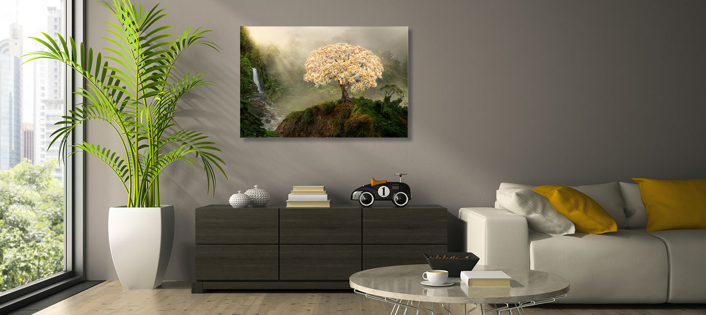

Metal and Acrylic Prints
A modern look that has been very popular recently is our HD metal prints.

Canvas, Framed Canvas, and Gallery Wraps

Paper Prints
It is our goal to provide images in all price ranges, so whether you are shopping for a gift or are a student with a small budget, our paper prints are convenient and easy to use. They come in common frame sizes for those who would like to find their own frame for it. Sizes available are 8x10 to 24x36, although we understand people also will use them like posters around their house